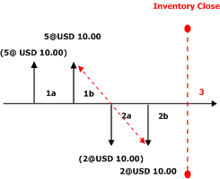
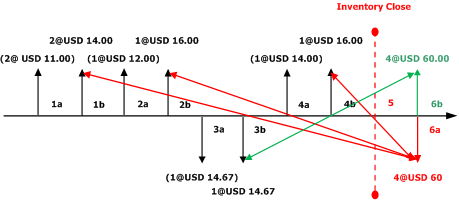
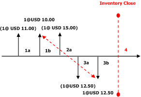
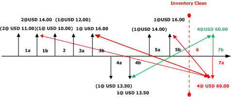
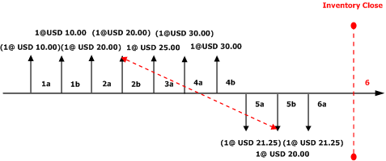

Gewichteter Durchschnitt mit physischem Wert und Markierung
Important
Dynamics 365 for Finance and Operations hat sich zu speziell entwickelten Anwendungen entwickelt, mit denen Sie bestimmte Geschäftsfunktionen verwalten können. Weitere Informationen zu diesen Änderungen finden Sie im Dynamics 365-Lizenzierungshandbuch.
Beim gewichteten Durchschnitt handelt es sich um ein auf dem Prinzip des gewichteten Durchschnitts basierendes Lagermodell. Für dieses Modell werden Abgänge aus dem Bestand mit dem Durchschnittswert der Artikel, die im Rahmen der Lagerabschlussperiode in den Bestand eingehen, sowie des gesamten verfügbaren Bestands der vorangegangenen Periode bewertet.
Beim Ausführen eines Lagerabschlusses werden alle Zugänge anhand eines virtuellen Abgangs ausgeglichen, der die Gesamtmenge sowie den Gesamtwert der Zugänge enthält. Für diesen virtuellen Abgang ist auch ein entsprechender virtueller Zugang vorhanden, von dem aus die Abgänge ausgeglichen werden. Auf diese Weise erhalten alle Abgänge die gleichen Durchschnittskosten. Der virtuelle Abgang sowie der virtuelle Zugang können als virtueller Übertrag (als Lagerabschlussübertrag mit gewichtetem Durchschnitt bezeichnet) gesehen werden.
Ist lediglich ein Zugang vorhanden, können alle Abgänge anhand dieses Zugangs ausgeglichen werden, und es wird kein virtueller Übertrag erstellt.
Bei Verwendung des gewichteten Durchschnitts können Lagerbuchungen markiert werden, damit ein bestimmter Artikelzugang mit einem bestimmten Abgang ausgeglichen und nicht die Regel für den gewichteten Durchschnitt verwendet wird.
Wenn Sie den gewichteten Durchschnitt verwenden, empfiehlt es sich, einen monatlichen Lagerabschluss durchzuführen.
Die Lagernachkalkulationsmethode für den gewichteten Durchschnitt wird nach folgender Formel berechnet:
- Gewichteter Durchschnitt = (M1*P1 + M2*P2 + Mn*Pn) / (M1 + M2 + Mn)
Lagerbuchungen, die die Lagerabgänge auslösen, z. B. Aufträge, Lagererfassungen, Einkaufsgutschriften und Produktionsaufträge, werden zu einem vorkalkulierten Einstandspreis zum Buchungsdatum ausgeführt. Dieser vorkalkulierte Einstandspreis wird auch als laufender Durchschnitt bezeichnet. Zum Zeitpunkt des Lagerabschlusses werden die Lagerbuchungen vom System für vorangegangene sowie für aktuelle Perioden analysiert, um zu bestimmen, welches der folgenden Abschlussprinzipien verwendet werden soll:
- Direkter Ausgleich
- Zusammengefasster Ausgleich
Bei einem Ausgleich handelt es sich um eine Lagerabschlussbuchung zur Anpassung der Abgänge an den korrekten gewichteten Durchschnitt des Abschlussdatums. In den folgenden Beispielen werden die Auswirkungen der Verwendung des gewichteten Durchschnitts anhand von fünf unterschiedlichen Konfigurationen veranschaulicht:
- Direkter Ausgleich mit gewichtetem Durchschnitt ohne Option "Physischen Wert einbeziehen"
- Zusammengefasster Ausgleich mit gewichtetem Durchschnitt ohne die Option "Physischen Wert einbeziehen"
- Direkter Ausgleich mit gewichtetem Durchschnitt und der Option "Physischen Wert einbeziehen"
- Zusammengefasster Ausgleich mit gewichtetem Durchschnitt und der Option "Physischen Wert einbeziehen"
- Gewichteter Durchschnitt mit Markierung
Direkter Ausgleich mit gewichtetem Durchschnitt ohne "Physischen Wert einbeziehen"
Das Prinzip des direkten Ausgleichs ist das gleiche, das auch in früheren Versionen für den gewichteten Durchschnitt verwendet wurde. Der Ausgleich erfolgt direkt zwischen Zugängen und Abgängen. Das System nutzt das Prinzip des direkten Ausgleichs in bestimmten Situationen:
- In der Periode wurden ein Zugang und mindestens ein Abgang gebucht.
- In der Periode wurden ausschließlich Abgänge gebucht, und das Lager enthält verfügbare Artikel aus einem früheren Abschluss.
Im Szenario in den folgenden Abschnitten wurden ein wertmäßig aktualisierter Zugang sowie ein wertmäßig aktualisierter Abgang gebucht. Beim Lagerabschluss wird der Zugang durch das System direkt mit dem Abgang ausgeglichen, und für den Abgang ist keine Regulierung des Einstandspreises erforderlich. In der Grafik werden die folgenden Buchungen veranschaulicht.
- 1a. Physische Aktualisierung des Lagerzugangs für die Menge "5" zu jeweils EUR 10,00.
- 1b. Wertmäßige Aktualisierung des Lagerzugangs für die Menge "5" zu jeweils EUR 10,00.
- 2a. Physische Aktualisierung des Lagerabgangs für die Menge "2" zu jeweils EUR 10,00.
- 2b. Wertmäßige Aktualisierung des Lagerabgangs für die Menge "2" zu jeweils EUR 10,00.
-
- Der Lagerabschluss erfolgt unter Verwendung der Methode für den direkten Ausgleich, um den wertmäßigen Lagerzugang mit dem wertmäßigen Lagerabgang auszugleichen.
Das folgende Diagramm gibt Aufschluss über diese Reihe von Buchungen sowie über die Auswirkungen der Auswahl des Lagermodells für den gewichteten Durchschnitt und des Prinzips des direkten Ausgleichs ohne die Option "Physischen Wert einbeziehen":

Diagrammschlüssel
- Lagerbuchungen sind durch vertikale Pfeile dargestellt.
- Zugänge zum Lager sind als vertikale Pfeile über der Zeitachse dargestellt.
- Abgänge aus dem Lager sind als vertikale Pfeile unter der Zeitachse dargestellt.
- Über (oder unter) den einzelnen vertikalen Pfeilen ist im Format Menge@Einheitenpreis der Wert der Lagerbuchung angegeben.
- Ein in Klammern gesetzter Lagerbuchungswert weist darauf hin, dass die Lagerbuchung physisch in das Lager gebucht wurde.
- Ein Lagerbuchungswert ohne Klammer weist darauf hin, dass die Lagerbuchung wertmäßig in das Lager gebucht wurde.
- Jede neue Zugangs- oder Abgangsbuchung wird mit einer neuen Beschriftung versehen.
- Jeder vertikale Pfeil ist mit einer Sequenzkennung (beispielsweise 1a) versehen. Mit dieser Kennung wird die Sequenz der Lagerbuchungen auf der Zeitachse angegeben.
- Lagerabschlüsse sind durch eine vertikale rote gestrichelte Linie und die Beschriftung "Lagerabschluss" gekennzeichnet.
- Ein durch einen Lagerabschluss vorgenommener Ausgleich ist durch einen roten gepunkteten Pfeil dargestellt, der diagonal von einem Zugang zu einem Abgang verläuft.
Zusammengefasster Ausgleich mit gewichtetem Durchschnitt ohne die Option "Physischen Wert einbeziehen"
Beim gewichteten Durchschnitt wird ein Ausgleichsprinzip verwendet, bei dem alle Zugänge innerhalb einer Abschlussperiode in einer neuen Buchung mit der Bezeichnung Lagerabschluss mit gewichtetem Durchschnitt zusammengefasst werden. Alle Zugänge der Periode werden mit dem Abgang der neu erstellten Umlagerungsbuchung ausgeglichen. Alle Abgänge der Periode werden mit dem Zugang der neu erstellten Umlagerungsbuchung ausgeglichen. Ist der verfügbare Bestand nach dem Lagerabschluss positiv, werden der verfügbare Bestand sowie der Wert des Lagers in der neuen Umlagerungsbuchung (Zugang) zusammengefasst. Ist der verfügbare Bestand nach dem Lagerabschluss negativ, handelt es sich bei dem verfügbaren Bestand und dem Wert des Lagers um die Summe der einzelnen Abgänge, die noch nicht vollständig ausgeglichen wurden. Im folgenden Szenario wurden mehrere wertmäßig aktualisierte Zugänge sowie ein Abgang gebucht:
Während des Lagerabschlusses wird vom System die zusammengefasste Umlagerungsbuchung generiert und gebucht, und alle Zugänge der Periode werden mit der zusammengefassten Umlagerungsabgangsbuchung ausgeglichen. Alle für die Periode gebuchten Abgänge werden mit der zusammengefassten Umlagerungszugangsbuchung ausgeglichen. Der gewichtete Durchschnitt wird mit EUR 15,00 berechnet. Der Abgang wurde ursprünglich mit einem vorkalkulierten Einstandspreis von EUR 14,67 gebucht. Daher wird für diesen Abgang eine negative Regulierung in Höhe von EUR 0,33 erstellt und gebucht. Zum Lagerabschlussdatum besitzt der verfügbare Bestand die Menge "3" mit einem Wert von EUR 45,00.
In der Grafik weiter unten werden die folgenden Buchungen veranschaulicht:
- 1a. Physische Aktualisierung des Lagerzugangs für die Menge "2" zu jeweils EUR 11,00 (Kosten).
- 1b. Wertmäßige Aktualisierung des Lagerzugangs für die Menge "2" zu jeweils EUR 14,00 (Kosten).
- 2a. Physische Aktualisierung des Lagerzugangs für die Menge "1" zu jeweils EUR 12,00 (Kosten).
- 2b. Wertmäßige Aktualisierung des Lagerzugangs für die Menge "1" zu jeweils EUR 16,00 (Kosten).
- 3a. Physische Aktualisierung des Lagerabgangs für die Menge "1" zu jeweils EUR 14,67 (laufender Durchschnitt).
- 3b. Wertmäßige Aktualisierung des Lagerabgangs für die Menge "1" zu jeweils EUR 14,67 (laufender Durchschnitt).
- 4a. Physische Aktualisierung des Lagerzugangs für die Menge "1" zu jeweils EUR 14,00 (Kosten).
- 4b. Wertmäßige Aktualisierung des Lagerzugangs für die Menge "1" zu jeweils EUR 16,00 (Kosten).
-
- Lagerabschluss wird vorgenommen.
- 6a. Wertmäßiger Abgang vom Typ "Lagerabschlussbuchung mit gewichtetem Durchschnitt" wird erstellt, um die Ausgleiche aller wertmäßigen Lagerzugänge zu summieren.
- 6b. Wertmäßiger Zugang vom Typ "Lagerabschlussbuchung mit gewichtetem Durchschnitt" wird zum Ausgleich von 5a erstellt.
Das folgende Diagramm gibt Aufschluss über diese Reihe von Buchungen sowie über die Auswirkungen der Auswahl des Lagermodells für den gewichteten Durchschnitt und des Prinzips des zusammengefassten Ausgleichs ohne die Option "Physischen Wert einbeziehen":

Diagrammschlüssel
- Lagerbuchungen sind durch vertikale Pfeile dargestellt.
- Zugänge zum Lager sind als vertikale Pfeile über der Zeitachse dargestellt.
- Abgänge aus dem Lager sind als vertikale Pfeile unter der Zeitachse dargestellt.
- Über (oder unter) den einzelnen vertikalen Pfeilen ist im Format Menge@Einheitenpreis der Wert der Lagerbuchung angegeben.
- Ein in Klammern gesetzter Lagerbuchungswert weist darauf hin, dass die Lagerbuchung physisch in das Lager gebucht wurde.
- Ein Lagerbuchungswert ohne Klammer weist darauf hin, dass die Lagerbuchung wertmäßig in das Lager gebucht wurde.
- Jede neue Zugangs- oder Abgangsbuchung wird mit einer neuen Beschriftung versehen.
- Jeder vertikale Pfeil ist mit einer Sequenzkennung (beispielsweise 1a) versehen. Mit dieser Kennung wird die Sequenz der Lagerbuchungen auf der Zeitachse angegeben.
- Lagerabschlüsse sind durch eine vertikale rote gestrichelte Linie und die Beschriftung "Lagerabschluss" gekennzeichnet.
- Ein durch einen Lagerabschluss vorgenommener Ausgleich ist durch einen roten gepunkteten Pfeil dargestellt, der diagonal von einem Zugang zu einem Abgang verläuft.
- Rote Pfeile stehen für die Zugangsbuchungen, die mit der vom System erstellten Abgangsbuchung ausgeglichen werden.
- Der grüne Pfeil steht für die vom System generierte Zugangsgegenbuchung, mit der die ursprünglich gebuchte Abgangsbuchung ausgeglichen wird.
Direkter Ausgleich mit gewichtetem Durchschnitt und der Option "Physischen Wert einbeziehen"
Die Verwendung des Parameters "Physischen Wert einbeziehen" für den gewichteten Durchschnitt unterscheidet sich von der Funktionsweise in früheren Versionen. Wählen Sie das Feld "Physischen Wert einbeziehen" für einen Artikel im Formular "Lagersteuerungsgruppe" aus. Vom System werden zur Berechnung des vorkalkulierten Einstandspreises (oder des laufenden Durchschnitts) physisch aktualisierte Zugänge verwendet. Die Buchung der Abgänge während der Periode erfolgt auf Basis dieses vorkalkulierten Einstandspreises. Beim Lagerabschluss werden wertmäßig aktualisierte Zugänge ausschließlich in der Berechnung des gewichteten Durchschnitts berücksichtigt. Wenn Sie den gewichteten Durchschnitt verwenden, empfiehlt es sich, einen monatlichen Lagerabschluss durchzuführen. In diesem Beispiel für einen direkten Ausgleich mit gewichtetem Durchschnitt ist die Artikelmodellgruppe so konfiguriert, dass der physische Wert einbezogen wird.
In der Grafik weiter unten werden die folgenden Buchungen veranschaulicht:
- 1a. Physische Aktualisierung des Lagerzugangs für die Menge "1" zu jeweils EUR 11.00 (Kosten).
- 1b. Wertmäßige Aktualisierung des Lagerzugangs für die Menge "1" zu jeweils EUR 10.00 (Kosten).
- 2a. Physische Aktualisierung des Lagerzugangs für die Menge "1" zu jeweils EUR 15.00 (Kosten).
- 3a. Physische Aktualisierung des Lagerabgangs für die Menge "1" zu jeweils EUR 12,50 (laufende Durchschnittskosten, da der physische Zugangswert berücksichtigt wird).
- 3b. Wertmäßige Aktualisierung des Lagerabgangs für die Menge "1" zu jeweils EUR 12,50 (laufende Durchschnittskosten, da der physische Zugangswert berücksichtigt wird).
-
- Lagerabschluss wird vorgenommen. Beim Lagerabschluss werden vom System alle Lagerbuchungen ignoriert, die lediglich physisch aktualisiert wurden. Stattdessen kommt das Prinzip des direkten Ausgleichs zum Einsatz, da lediglich ein wertmäßiger Zugang vorhanden ist. Für die Lagerbuchung, bei der bis zum Lagerabschluss ein wertmäßiger Abgang vorliegt, erfolgt eine Regulierung in Höhe von EUR 2,50. Nach dem Lagerabschluss besitzt der verfügbare Bestand die Menge "1" und einen laufenden Durchschnittseinstandspreis von EUR 15,00.
Das folgende Diagramm gibt Aufschluss über diese Reihe von Buchungen sowie über die Auswirkungen der Auswahl des Lagermodells für den gewichteten Durchschnitt und des Prinzips des direkten Ausgleichs mit der Option "Physischen Wert einbeziehen":

Diagrammschlüssel
- Lagerbuchungen sind durch vertikale Pfeile dargestellt.
- Zugänge zum Lager sind als vertikale Pfeile über der Zeitachse dargestellt.
- Abgänge aus dem Lager sind als vertikale Pfeile unter der Zeitachse dargestellt.
- Über (oder unter) den einzelnen vertikalen Pfeilen ist im Format Menge@Einheitenpreis der Wert der Lagerbuchung angegeben.
- Ein in Klammern gesetzter Lagerbuchungswert weist darauf hin, dass die Lagerbuchung physisch in das Lager gebucht wurde.
- Ein Lagerbuchungswert ohne Klammer weist darauf hin, dass die Lagerbuchung wertmäßig in das Lager gebucht wurde.
- Jede neue Zugangs- oder Abgangsbuchung wird mit einer neuen Beschriftung versehen.
- Jeder vertikale Pfeil ist mit einer Sequenzkennung (beispielsweise 1a) versehen. Mit dieser Kennung wird die Sequenz der Lagerbuchungen auf der Zeitachse angegeben.
- Lagerabschlüsse sind durch eine vertikale rote gestrichelte Linie und die Beschriftung "Lagerabschluss" gekennzeichnet.
- Ein durch einen Lagerabschluss vorgenommener Ausgleich ist durch einen roten gepunkteten Pfeil dargestellt, der diagonal von einem Zugang zu einem Abgang verläuft.
Zusammengefasster Ausgleich mit gewichtetem Durchschnitt und der Option "Physischen Wert einbeziehen"
Die Verwendung des Parameters "Physischen Wert einbeziehen" für den gewichteten Durchschnitt unterscheidet sich von der Funktionsweise in früheren Versionen. Wählen Sie das Feld "Physischen Wert einbeziehen" für einen Artikel auf der Seite "Lagersteuerungsgruppe" aus. Vom System werden zur Berechnung des vorkalkulierten Einstandspreises (oder des laufenden Durchschnitts) physisch aktualisierte Zugänge verwendet. Die Buchung der Abgänge während der Periode erfolgt auf Basis dieses vorkalkulierten Einstandspreises. Beim Lagerabschluss werden wertmäßig aktualisierte Zugänge ausschließlich in der Berechnung des gewichteten Durchschnitts berücksichtigt. Wenn Sie den gewichteten Durchschnitt verwenden, empfiehlt es sich, einen monatlichen Lagerabschluss durchzuführen. In diesem Beispiel für einen zusammengefassten Ausgleich mit gewichtetem Durchschnitt ist die Lagersteuerungsgruppe so konfiguriert, dass der physische Wert einbezogen wird.
In der Grafik weiter unten werden die folgenden Buchungen veranschaulicht:
- 1a. Physische Aktualisierung des Lagerzugangs für die Menge "2" zu jeweils EUR 11,00 (Kosten).
- 1b. Wertmäßige Aktualisierung des Lagerzugangs für die Menge "2" zu jeweils EUR 14,00 (Kosten).
-
- Physische Aktualisierung des Lagerzugangs für die Menge "1" zu jeweils EUR 10,00 (Kosten).
- 3a. Physische Aktualisierung des Lagerzugangs für die Menge "1" zu jeweils EUR 12,00 (Kosten).
- 3b. Wertmäßige Aktualisierung des Lagerzugangs für die Menge "1" zu jeweils EUR 16,00 (Kosten).
- 4a. Physische Aktualisierung des Lagerabgangs für die Menge "1" zu jeweils EUR 13,50 (laufende Durchschnittskosten, da der physische Zugangswert berücksichtigt wird).
- 4b. Wertmäßige Aktualisierung des Lagerabgangs für die Menge "1" zu jeweils EUR 13,50 (laufende Durchschnittskosten, da der physische Zugangswert berücksichtigt wird).
- 5a. Physische Aktualisierung des Lagerzugangs für die Menge "1" zu jeweils EUR 14,00 (Kosten).
- 5b. Wertmäßige Aktualisierung des Lagerzugangs für die Menge "1" zu jeweils EUR 16,00 (Kosten).
-
- Lagerabschluss wird vorgenommen. Beim Lagerabschluss werden vom System alle Lagerbuchungen ignoriert, die lediglich physisch aktualisiert wurden. Das Prinzip des direkten Ausgleichs kommt zum Einsatz, da lediglich ein wertmäßiger Zugang vorhanden ist. Für die Lagerbuchung, bei der bis zum Lagerabschluss ein wertmäßiger Abgang vorliegt, erfolgt eine Regulierung in Höhe von EUR 1,50. Nach dem Lagerabschluss besitzt der verfügbare Bestand die Menge "3" und einen laufenden Durchschnittseinstandspreis von EUR 15,00.
- 7a. Wertmäßiger Abgang vom Typ "Lagerabschlussbuchung mit gewichtetem Durchschnitt" wird erstellt, um die Ausgleiche aller wertmäßigen Lagerzugänge zu summieren.
- 7b. Wertmäßiger Zugang vom Typ "Lagerabschlussbuchung mit gewichtetem Durchschnitt" wird zum Ausgleich von 5a erstellt.
Das folgende Diagramm gibt Aufschluss über diese Reihe von Buchungen sowie über die Auswirkungen der Auswahl des Lagermodells für den gewichteten Durchschnitt und des Prinzips des zusammengefassten Ausgleichs ohne die Option "Physischen Wert einbeziehen":

Diagrammschlüssel
- Lagerbuchungen sind durch vertikale Pfeile dargestellt.
- Zugänge zum Lager sind als vertikale Pfeile über der Zeitachse dargestellt.
- Abgänge aus dem Lager sind als vertikale Pfeile unter der Zeitachse dargestellt.
- Über (oder unter) den einzelnen vertikalen Pfeilen ist im Format Menge@Einheitenpreis der Wert der Lagerbuchung angegeben.
- Ein in Klammern gesetzter Lagerbuchungswert weist darauf hin, dass die Lagerbuchung physisch in das Lager gebucht wurde.
- Ein Lagerbuchungswert ohne Klammer weist darauf hin, dass die Lagerbuchung wertmäßig in das Lager gebucht wurde.
- Jede neue Zugangs- oder Abgangsbuchung wird mit einer neuen Beschriftung versehen.
- Jeder vertikale Pfeil ist mit einer Sequenzkennung (beispielsweise 1a) versehen. Mit dieser Kennung wird die Sequenz der Lagerbuchungen auf der Zeitachse angegeben.
- Lagerabschlüsse sind durch eine vertikale rote gestrichelte Linie und die Beschriftung "Lagerabschluss" gekennzeichnet.
- Ein durch einen Lagerabschluss vorgenommener Ausgleich ist durch einen roten gepunkteten Pfeil dargestellt, der diagonal von einem Zugang zu einem Abgang verläuft.
- Rote Pfeile stehen für die Zugangsbuchungen, die mit der vom System erstellten Abgangsbuchung ausgeglichen werden.
- Der grüne Pfeil steht für die vom System generierte Zugangsgegenbuchung, mit der die ursprünglich gebuchte Abgangsbuchung ausgeglichen wird.
Gewichteter Durchschnitt mit Markierung
Der Begriff "Markierung" bezeichnet ein Verfahren zum Verknüpfen (oder Markieren) einer Abgangsbuchung mit einer Zugangsbuchung. Eine Markierung kann entweder vor oder nach Ausführung der Buchung erfolgen. Durch die Verwendung einer Markierung lassen sich bei der Ausführung der Buchung oder des Lagerabschlusses die exakten Kosten des Lagers ermitteln.
Beispiel: In der Kundendienstabteilung wurde der Eilauftrag eines wichtigen Debitors angenommen. Da es sich hierbei um einen Eilauftrag handelt, müssen Sie für diesen Artikel einen höheren Preis bezahlen, um den Wunsch des Debitors erfüllen zu können. Deshalb möchten Sie sichergehen, dass bei der Auftragsrechnung die Kosten für diesen Lagerartikel in der Gewinnspanne (auch: Wareneinsatz, COGS) berücksichtigt werden.
Bei der Buchung der Bestellung erhält das Lager einen Zugang in Höhe von EUR 120,00 (Kosten). Beispielsweise wird dieses Auftragsdokument vor der Buchung des Lieferscheins oder der Rechnung für die Bestellung markiert. Der Wareneinsatz (COGS) beträgt anstelle der aktuellen laufenden Durchschnittskosten für den Artikel dann EUR 120,00. Wird der Lieferschein oder die Rechnung des Auftrags gebucht, bevor die Markierung vorgenommen wird, erfolgt die Buchung des Wareneinsatzes zum laufenden Durchschnittseinstandspreis.
Die Markierung der beiden Buchungen kann noch bis zur Ausführung des Lagerabschlusses nachgeholt werden.
Eine Zugangsbuchung wird für eine Abgangsbuchung markiert. Anschließend wird die für die Artikelmodellgruppe des Artikels ausgewählte Bewertungsmethode ignoriert, und die Buchungen werden vom System gegenseitig ausgeglichen.
Sie können vor der Ausführung der Buchung eine Abgangsbuchung für einen Zugang markieren. Dies kann von einer Auftragsposition auf der Seite "Auftragsdetails" aus erfolgen. Sie können die offenen Zugangsbuchungen auf der Seite "Markierung" anzeigen.
Sie können nach der Ausführung der Buchung eine Abgangsbuchung für einen Zugang markieren. Sie können eine Abgangsbuchung für eine offene Zugangsbuchung für einen gelagerten Artikel aus einer gebuchten Lagerregulierungserfassung abgleichen oder markieren.
In der Grafik weiter unten werden die folgenden Buchungen veranschaulicht:
- 1a. Physischer Lagerzugang für die Menge "1" zu jeweils EUR 10,00 (Kosten).
- 1b. Wertmäßiger Lagerzugang für die Menge "1" zu jeweils EUR 10,00 (Kosten).
- 2a. Physischer Lagerzugang für die Menge "1" zu jeweils EUR 20,00 (Kosten).
- 2b. Wertmäßiger Lagerzugang für die Menge "1" zu jeweils EUR 20,00 (Kosten).
- 3a. Physischer Lagerzugang für die Menge "1" zu jeweils EUR 25,00 (Kosten).
- 4a. Physischer Lagerzugang für die Menge "1" zu jeweils EUR 30,00 (Kosten).
- 4b. Wertmäßiger Lagerzugang für die Menge "1" zu jeweils EUR 30,00 (Kosten).
- 5a. Physischer Lagerabgang für die Menge "1" zu einem Einstandspreis von EUR 21,25 (laufender Durchschnitt wertmäßig und physisch aktualisierter Buchungen).
- 5b. Wertmäßiger Lagerabgang für die Menge "1" wird für den Lagerzugang aus 2b markiert, bevor die Buchung ausgeführt wird. Diese Buchung erfolgt mit einem Einstandspreis von EUR 20,00.
- 6a. Physischer Lagerabgang für die Menge "1" zu einem Einstandspreis von jeweils EUR 21,25.
-
- Lagerabschluss wird vorgenommen. Da die wertmäßig aktualisierte Buchung für einen vorhandenen Zugang markiert ist, werden diese Buchungen gegenseitig ausgeglichen, und es ist keine Regulierung erforderlich.
Im neuen laufenden Durchschnittseinstandspreis ist der Durchschnitt der wertmäßig und physisch aktualisierten Buchungen in Höhe von EUR 27,50 berücksichtigt.
Das folgende Diagramm gibt Aufschluss über diese Reihe von Buchungen sowie über die Auswirkungen der Auswahl des Lagermodells für den gewichteten Durchschnitt mit angewendeter Markierung:

Diagrammschlüssel
- Lagerbuchungen sind durch vertikale Pfeile dargestellt.
- Zugänge zum Lager sind als vertikale Pfeile über der Zeitachse dargestellt.
- Abgänge aus dem Lager sind als vertikale Pfeile unter der Zeitachse dargestellt.
- Über (oder unter) den einzelnen vertikalen Pfeilen ist im Format Quantity@"Unitprice" der Wert der Lagerbuchung angegeben.
- Ein in Klammern gesetzter Lagerbuchungswert weist darauf hin, dass die Lagerbuchung physisch in das Lager gebucht wurde.
- Ein Lagerbuchungswert ohne Klammer weist darauf hin, dass die Lagerbuchung wertmäßig in das Lager gebucht wurde.
- Jede neue Zugangs- oder Abgangsbuchung wird mit einer neuen Beschriftung versehen.
- Jeder vertikale Pfeil ist mit einer Sequenzkennung (beispielsweise 1a) versehen. Mit dieser Kennung wird die Sequenz der Lagerbuchungen auf der Zeitachse angegeben.
- Lagerabschlüsse sind durch eine vertikale rote gestrichelte Linie und die Beschriftung "Lagerabschluss" gekennzeichnet.
- Ein durch einen Lagerabschluss vorgenommener Ausgleich ist durch einen roten gepunkteten Pfeil dargestellt, der diagonal von einem Zugang zu einem Abgang verläuft.